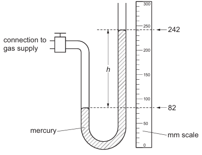
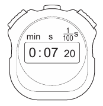
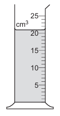
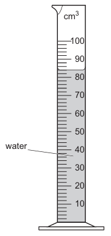
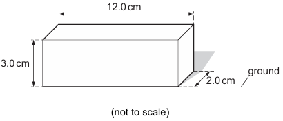
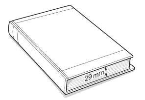
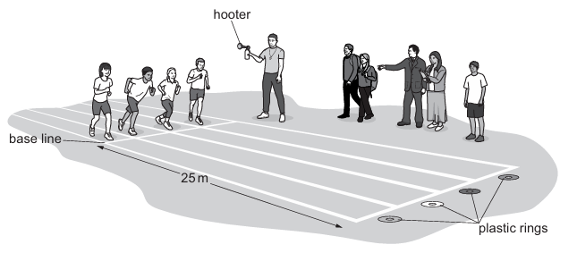
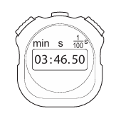

1.1 Physical Quantities and Measurement Techniques
Paper 1
Measurement and Basic Physics Calculations
In this section, we will explore measurement techniques and calculations involving pressure, volume, area, and time. Questions will test the understanding of fundamental concepts with real-world scenarios.
Problems
-
Question 1
A device for measuring gas pressure is connected to a gas supply as shown in the diagram.
(a) Determine the difference \( h \) between the mercury levels shown in the diagram.
\( h = \, \ldots \, \text{mm} \) [2]
(b) The atmospheric pressure is \( 760 \, \text{mm} \) of mercury. Determine the pressure of the gas supply.
\(\text{Pressure of gas supply} = \, \ldots \, \text{mm of mercury} \) [1]
[Total: 3]
-
Question 2
A student uses a digital stop-watch to measure the time for a car to travel \(100 \text{m}.\) The diagram shows the time reading on the stop-watch.
Using the information in the diagram, state the time taken to travel \( 100 \text{m}. \)
Time taken to travel \( 100 \text{m} = \, \ldots \, \text{s} \) [1]
-
Question 3
The diagram shows a measuring cylinder containing some water.
(a) State the volume of the water in the measuring cylinder.
\( \text{Volume} = \, \ldots \, \text{cm}^3 \) [1]
(b) A student adds \( 20 \) drops of water to the cylinder. The new volume is \( 25 \, \text{cm}^3 \). Calculate the average volume of one drop of water.
\( \text{Average volume of one drop} = \, \ldots \, \text{cm}^3 \) [4]
[Total: 5]
-
Question 4
The diagram shows the volume of water collected in a measuring cylinder by a student.
Determine the volume of water in the measuring cylinder.
\( \text{Volume} = \, \ldots \, \text{cm}^3 \) [1]
[Total: 1]
-
Question 5
The diagram shows a metal block and its dimensions. Calculate the area of the block in contact with the ground.
\( \text{Area} = \, \ldots \, \text{cm}^2 \) [2]
[Total: 2]
-
Question 6
The diagram shows a closed textbook with \( 270 \) sheets. The total thickness is \( 29 \, \text{mm} \). Calculate the average thickness of one sheet of paper.
\( \text{Average thickness of one sheet} = \, \ldots \, \text{mm} \) [3]
[Total: 3]
-
Question 7
The diagram shows children running a \( 25 \, \text{m} \) race. They pick up a ring and return to the base line. Each child finishes when they cross the base line holding the plastic ring.
(a) Suggest equipment for measuring \( 25 \, \text{m} \).
_____________________________________________________ [1]
(b) Determine the total distance for the race.
[Total: 2]
-
Question 8
Water is dripping from a tap into a measuring cylinder. The water drops fall from the tap at equal time intervals. A student uses a stop-watch to measure the time taken for the tap to produce \( 200 \) drops. The diagram shows the time reading on the stop-watch.
(a) Determine the time for \( 200 \) drops.
\( \text{Time} = \, \ldots \, \text{s} \) [2]
1.2 Motion
A train of mass \( 5.6 \times 10^5 \, \text{kg} \) is at rest in a station...
(a) (i) Use the distance-time graph to determine the average speed of the train during the 120s.
Average speed = .............................................. [1]
(a) (ii) Use the distance-time graph to determine the speed of the train at time \( t = 100s \).
Speed = .............................................. [2]
(a) (iii) Describe how the acceleration of the train at time \( t = 100s \) differs from the acceleration at time \( t = 20s \).
........................................................................... [2]
(b) (i) The initial acceleration of the train is \( 0.75 \, \text{m/s}^2 \). Calculate the resultant force that acts on the train at this time.
Resultant force = .............................................. [2]
(b) (ii) At time \( t = 120s \), the train begins to decelerate. State what is meant by deceleration.
........................................................................... [1]
[Total: 8]
A student determines the speed of three cars on a straight road.
(a) (i) Without calculation, identify the fastest car and the slowest car. Complete the table.
Car: the fastest car, the slowest car
(a) (ii) Calculate the speed of car B.
Speed = ............................................................. m/s [3]
(b) (i) Estimate the time, in minutes, for car C to travel 5000m.
Estimated time = ............................ minutes [2]
(b) (ii) Explain why your answer in (b)(i) may not be the same as the actual time taken for the car to travel 5000m.
........................................................................... [2]
[Total: 7]
1.3 Mass and Weight
The diagram shows a boat stored in a shed. The boat is suspended from the ceiling of the shed by two ropes.
(a) (i) Draw a vector diagram to determine the resultant of the forces exerted by the two ropes on the boat. State the scale you used.
Scale = ..............................................
Magnitude of resultant force = ..............................................
Direction of resultant force = ..............................................
(b) Determine the mass of the boat.
Mass = ..............................................
The diagram shows a uniform rod of wood suspended from a pivot. The rod is held stationary by a horizontal force F acting as shown. The mass of the rod is 0.080 kg.
(a) Calculate the weight W of the rod.
Weight = ..............................................
(b) Calculate the moment of W about the pivot.
Moment = ..............................................
(c) Calculate the moment of F about the pivot.
Moment = ..............................................
The diagram shows a sky-diver jumping out of a hot-air balloon. At time = 30s, she opens her parachute. The graph is the speed-time graph of her fall.
(a) Describe, in terms of the forces acting on the sky-diver, her motion between leaving the balloon and opening her parachute.
Answer = ..............................................
The diagram shows a sign that extends over a road. The mass of the sign is \( 3.4 \times 10^3 \, \text{kg} \).
(a) Calculate the weight W of the sign.
Weight = ..............................................
A glass of water has a mass of 0.5 kg. The glass is supported by a table. The glass is lifted off the table and held in the air.
(a) Calculate the force due to gravity acting on the glass.
Force = ..............................................
(b) The glass of water is placed on the table. The glass exerts a downward force on the table. Explain how this force is transmitted through the table.
Answer = ..............................................
5.1 The nuclear model of atom
where \( v \) is the final velocity, \( u \) is the initial velocity, \( a \) is acceleration, and \( t \) is the time taken.